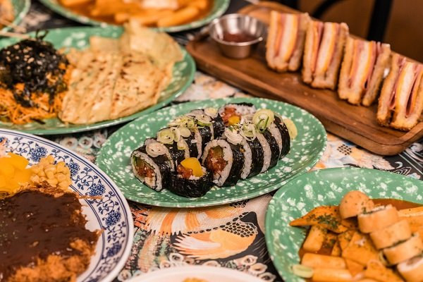

About
 sourceSoPoong is a Korean street food restaurant, the one and only restaurant that specializes in Korea's 'Bunsik' in Collegetown, Ithaca.
Bunsik, literally meaning "food made from flour," is a term used to refer to reasonably priced Korean dishes. It is the most beloved snacks in Korea due to its fastness, cheapness, and deliciousness. The most adored bunsik includes Gimbap, tteokbokki and eomuk. In Korea, many street vendors can be found near university areas, such as Sinchon, Edae, Hongdae, as well as in the popular shopping districts of Myeong-dong and Gangnam.
About Us
History
"My wife and I established this restaurant about two years ago. We decided to make the theme ‘Bunsik’ because it was unique in Ithaca. We also wanted to make our space feel like an actual bunsik restaurant in Korea, which is why it’s organized like an indoor street food stall. I hope nostalgic Korean students can feel like home here at our restaurant with warmth and intimacy." - Yun Ho Heo
Mission Statement
Our mission is to make sure we provide our patrons the best dining experience with fast and cheap but delicious foods. We will focus on developing new menus regularly so that our community can have more opportunities to attempt a variety of Bunsik.
Press
A "So Poong" to SoPoong
Link: https://cornellsun.com/2018/04/25/a-so-poong-to-sopoong/
" So poong (소풍) is the Korean word for a trip, picnic, outing or excursion; it implies that you are taking a short trip — the destination is often not far — with someone else. In Korean culture, so poong is usually associated with spending time with family or classmates, and a picnic outside is often accompanied by homemade kimbap rolls. As someone who has never really loved kimbap, I peculiarly enjoyed SoPoong’s versions! And although I’m not so sure about the other menu items, and the seating and presentation leave much to be desired, I do think I will be going back often, especially due to its inexpensive prices and speedy service. I truly hope the place is here to stay; more Korean options means a more satisfied Ruth. Overall, I do recommend trying SoPoong out — go on a so poong to SoPoong — but maybe take the food outside instead! When the sun is out, Libe Slope looks like a beautiful place to be happily munching on some kimbap with friends. "